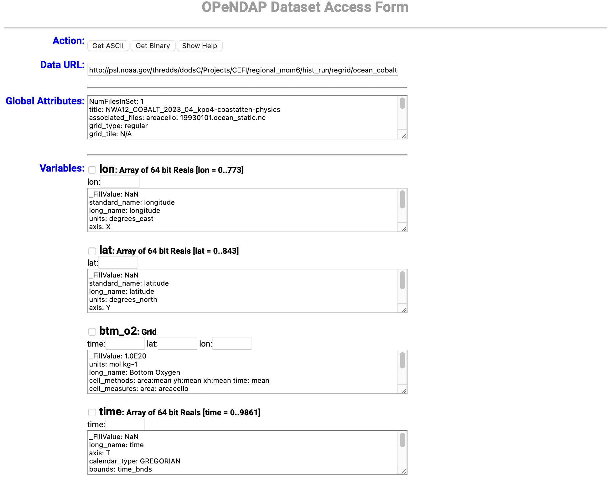

OPeNDAP Server Interface#
Quick Introduction#
For the quick introduction, we will be using the following server that provides a OPeNDAP platform.
The OPeNDAP Dataset Access Form
The Dataset Structure
The Dataset Attribute
Getting the data
Important
Different OPeNDAP servers might have slightly different format like the one shown above. But the general element put in bold font below should still be present.
OPeNDAP Dataset Access Form#
The access form give a quick view on most of the important thing about the dataset (see figure)


We can first skip the Action and Data URL line. The Global Attributes shows the dataset attribute. It usually contains the proceesing center name, reference related to the dataset, dataset name/title, etc.
The Variables will list out all avialable variables in the datasets. This include the attributes related to each variable and the total length/dimension of each variables. By checking the box next to the variable, it will change the Data URL structure at the top. This enable the subsetting the dataset to different spatio-temporal coverage or focusing only on some variables when there are multiple gridded variables.
Finally, at the bottom of the form, there is a DDS which shows the data structure of the dataset.
Downloading individual dataset#
By click on the Get ASCII and Get Binary button on the Action line will trigger the download to ascii or binary format.
This action will include the subsetting user defined in the Variables section.
Tip
If no subsetting is specified, the whole dataset will be downloaded. However, there is usually a limit on the OPeNDAP server on total data download in one submitted form. If the total dataset is over the limit, both actions will not work.
Quick view of data attributes (global and variables)#
A quick way to get the detail attribute of the dataset We can change the data page URL from
https://psl.noaa.gov/thredds/dodsC/Projects/CEFI/regional_mom6/northwest_atlantic/hist_run/ocean_cobalt_daily_2d.19930101-20191231.btm_o2.nc.html
to
https://psl.noaa.gov/thredds/dodsC/Projects/CEFI/regional_mom6/northwest_atlantic/hist_run/ocean_cobalt_daily_2d.19930101-20191231.btm_o2.nc.das
The detail attributes will show on the browser directly. This is very similar to the ERDDAP server approach of getting the Data Attribute Structure (DAS) for a hosted dataset.
Other OPeNDAP servers#
There are many available OPeNDAP servers. Some most used server are shown below (feel free to contribute on the GitHub repo if you find other useful server)